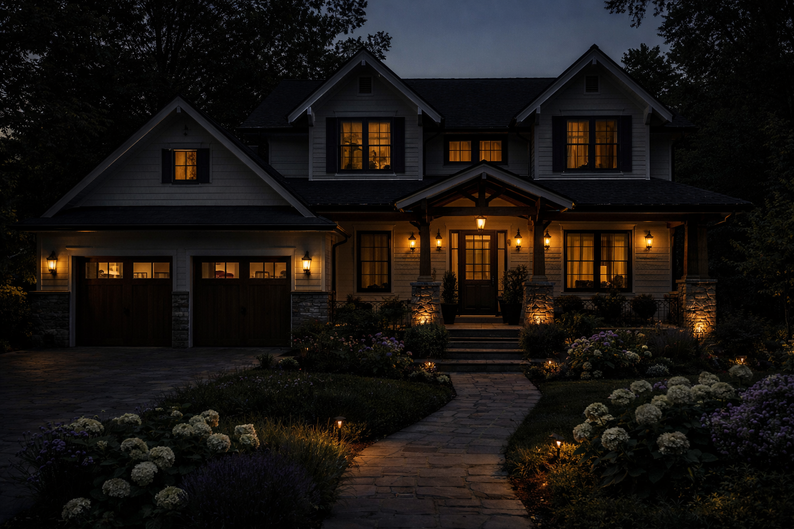
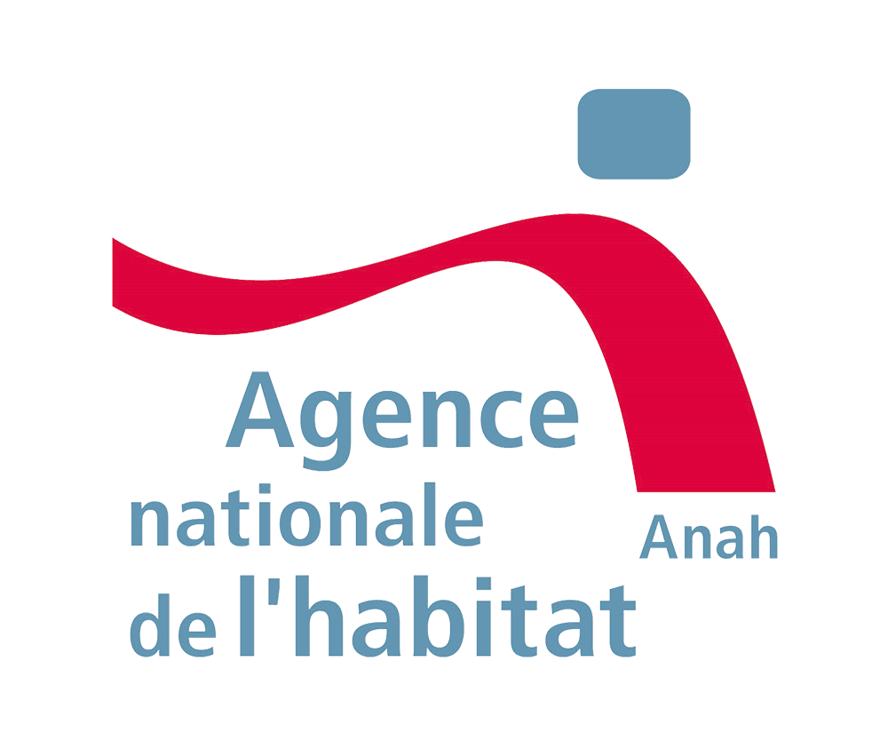

✔ Chantier propre et organisé
Un travail soigné du début à la fin.

Votre spécialiste en placo et isolation à Flers et dans l'Orne
Cloisons, isolation, plancher terrasse composite et coordination de chantier pour vos projets à Flers et dans l'Orne.
Demander un devisChez BATIORNE, chaque chantier est mené avec précision, propreté et respect des délais. De vos travaux de placo Flers à l'isolation Flers, nous assurons aussi terrasse composite et coordination avec une approche claire d'artisan Orne.
Obtenir mon devis gratuitUn travail soigné du début à la fin.
Un planning clair, sans mauvaise surprise.
Une isolation efficace pour un confort durable.
Vous avancez avec un suivi simple et transparent, de la préparation à la finition. BATIORNE coordonne le chantier, anticipe les étapes et vous garantit un résultat propre, confortable et prêt à vivre.
Intervention à Flers et alentoursVidéo illustrant la coordination, le suivi de chantier et les finitions réalisées par BATIORNE à Flers et dans l'Orne.
Cliquez sur une image pour ouvrir directement la réalisation correspondante.
BATIORNE est une entreprise qualifiée RGE (Reconnu Garant de l'Environnement). Cette qualification peut vous permettre, selon votre situation et les conditions en vigueur, d'être éligible à différentes aides pour vos travaux d'isolation et de rénovation énergétique.
Nous vous aidons à identifier les dispositifs mobilisables comme l'ANAH, MaPrimeRénov' et les certificats d'économies d'énergie (CEE), afin d'optimiser votre budget travaux en toute clarté.
Nous vous accompagnons pour comprendre les aides disponibles et constituer votre dossier (selon votre situation).
Vérifier mon éligibilité / Demander un devis
BATIORNE intervient à Flers et dans les communes alentours de l'Orne pour vos travaux de placo et d'isolation intérieure.
Non, le devis est gratuit. Nous étudions votre besoin et proposons une solution adaptée à votre maison.
Les délais varient selon la surface et la complexité du chantier. Un planning précis est communiqué dès la validation du devis.
Oui, les travaux BATIORNE sont couverts par une garantie décennale pour vous apporter une sécurité durable.